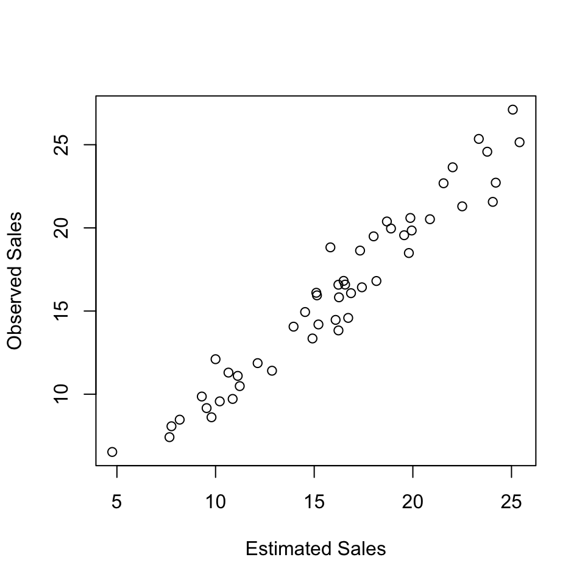

Example: Advertising dataset
Table 1.1: Snippet of the data
| 22.72 |
273.04 |
42.66 |
7.93 |
| 22.68 |
297.89 |
21.68 |
80.86 |
| 10.49 |
94.24 |
18.69 |
40.14 |
| 6.53 |
29.87 |
0.28 |
56.93 |
| 15.82 |
131.68 |
36.34 |
70.25 |
| 16.81 |
193.86 |
30.39 |
0.69 |
g <- lm(Sales ~ TV + Radio + Newspaper, df)
g
Fitting linear model: Sales ~ TV + Radio + Newspaper
| (Intercept) |
2.837 |
0.6154 |
4.611 |
3.204e-05 |
| TV |
0.04819 |
0.002059 |
23.41 |
3.419e-27 |
| Radio |
0.1818 |
0.0129 |
14.09 |
2.67e-18 |
| Newspaper |
0.008452 |
0.006925 |
1.22 |
0.2285 |
## Compare model with TV + Radio
## and model with TV + Radio + Newspaper
g <- lm(Sales ~ TV + Radio + Newspaper, df)
g2 <- lm(Sales ~ TV + Radio, df)
panderOptions('missing', '')
anova(g2, g)
Analysis of Variance Table
| 47 |
78.6 |
|
|
|
|
| 46 |
76.13 |
1 |
2.465 |
1.49 |
0.2285 |
plot(g2$fitted, Sales, xlab = "Estimated Sales", ylab = "Observed Sales")
